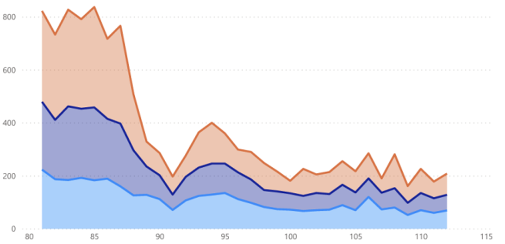
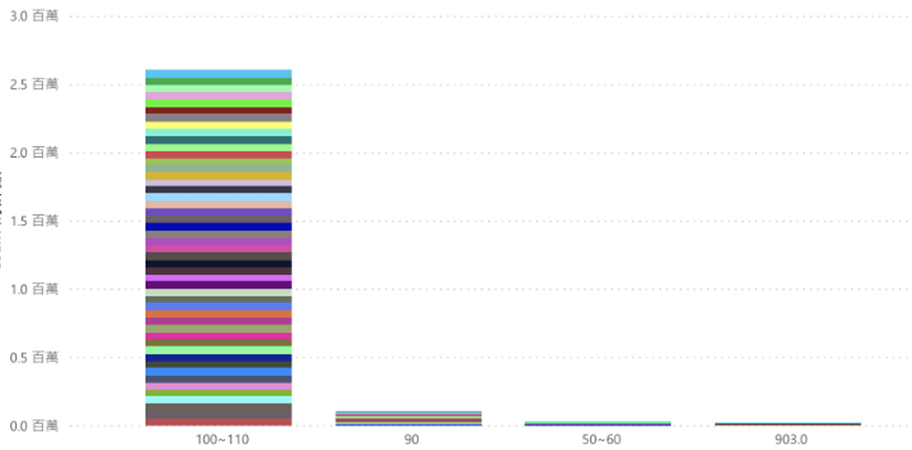
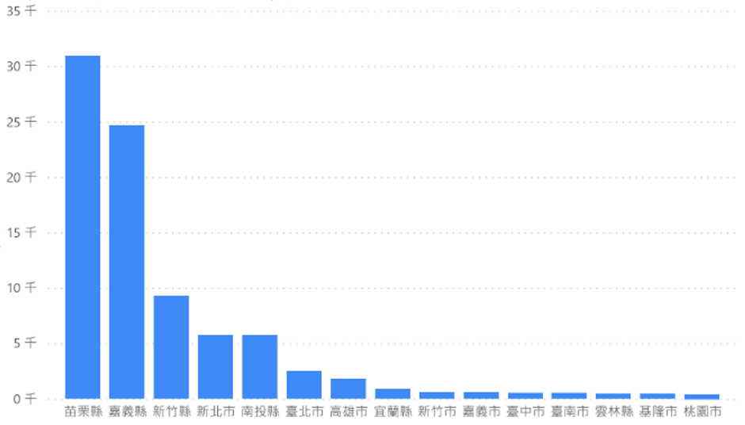

高速公路事故與動物致死分析
Open Data × Excel × Power BI | 公共資料視覺化分析
專案概述
使用政府的 Open Data API，分析全台高速公路事故與動物致死事件，結合 Excel 與 Power BI 打造互動式智慧儀表板，揭示事故熱點與動物致死的關係。

點擊開啟完整 PDF 報告
點擊上方預覽圖在新分頁開啟完整報告
核心功能
- 擷取政府 Open Data 事故資料
- 時間、路段、動物種類多維度分析
- 高速公路事故視覺化
- 互動式 KPI 商業智慧儀表板
- 動物致死趨勢
資料流程圖
Open Data → Excel 清理 → Power BI → 互動報表
完整資料分析流程
學習成長
掌握 公共資料處理、商業智慧、報表設計，具備政府級資料分析與視覺化能力，能將複雜數據轉化為決策洞察。
報表功能截圖

民國81年到112年的死亡數、事故數與受傷數

各速限區間動物致死件數

各縣市動物致死件數